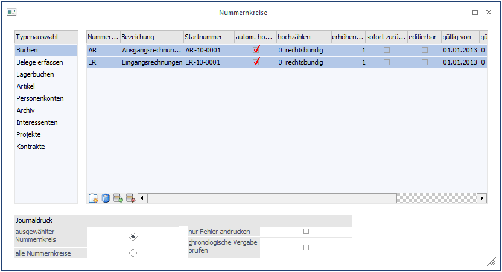
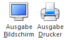
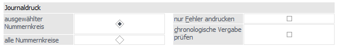
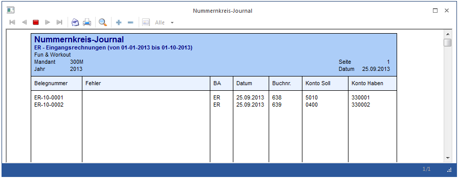
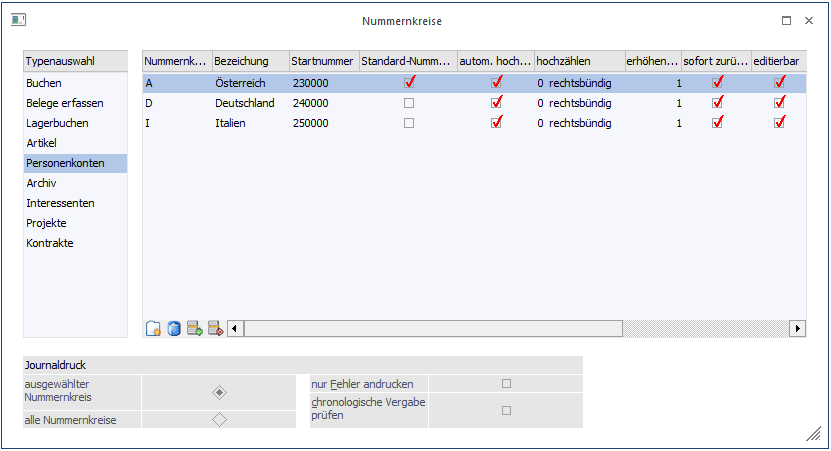
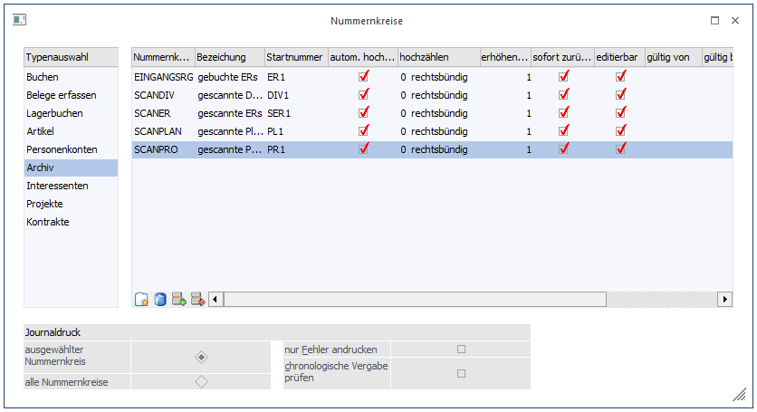
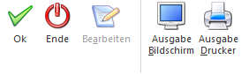
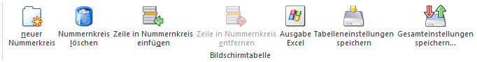

In den Programmen WinLine FIBU und WinLine FAKT können im Menüpunkt
1 Stammdaten
1 Nummernkreise
Nummernkreise für verschiedene Bereiche (Buchen, Belegerfassen, Lagerbuchen, Artikel, Personenkonten, Archiv, Interessenten, Projekte, Kontrakte) definiert werden.

In der linken Bildschirmtabelle kann ausgewählt werden, für welchen Bereich der Nummernkreis gelten soll.
Nachdem ein Bereich, z. B. "Buchen" gewählt wurde (der Fokus liegt auf dem jeweiligen Bereich), kann mit dem "NEU"-Button ein Nummernkreis in der rechten Bildschirmtabelle definiert werden.
Hinweise für den Bereich "Belege erfassen"
ü Beim Upsizen auf die Version 12 wird für jede Belegart und jede Belegstufe plus Projektnummer ein Nummernkreis angelegt.
ü Für das Anlegen und Editieren von Nummernkreisen muss zunächst der "Bearbeiten"-Button geklickt werden, der einen generellen FAKT-Lock absetzt.
ü Bei der Neuanlage werden die Optionen "automatisch hochzählen", "editierbar", und "sofort festschreiben" automatisch gesetzt und können nicht mehr geändert werden.
ü Ein Beleg-Nummernkreis kann nur gelöscht werden, wenn er in keiner Belegart hinterlegt ist.
ü Beim Zusammenführen von Wirtschaftsjahren (Wirtschaftsjahrunabhängige Stammdaten) wird in die Serien der Vorjahre als Gültigkeit WJ-Beginn und -Ende eingetragen.
Ø Nummernkreis
Eingabe eines Kurzcodes für den Nummernkreis
Ø Bezeichnung
Bezeichnung des Nummernkreises; z. B. AR für Ausgangsrechnungen, KA für Kassabuchungen, BA für Bankbuchungen
Ø Startnummer
Angabe der Nummer, von der aus hochgezählt werden soll, z. B. "AR-001".
Diese Nummer kann nicht mehr editiert werden, sobald der Nummernkreis erstmals verwendet wurde.
Ø autom. hochzählen
Wird diese Checkbox aktiviert, wird ausgehend von der Startnummer automatisch hochgezählt, ansonsten kann die Nummer manuell erhöht werden (evtl. beim Verbuchen von Bankbelegen, die alle die gleiche Nr. haben könnten). Für Belegnummern- und Archivnummernkreise ist diese Option immer aktiviert.
Ø hochzählen (wird derzeit nur für Nummernkreise des Typs "Buchen" unterstützt)
Durch Auswahl eines Eintrags kann festgelegt werden, wie das Hochzählen des Nummernkreises erfolgen soll:
ü 0 Rechtsbündig
Mit dieser
Einstellung wird rechtsbündig hochgezählt.
D. h. nach der Nummer 4711/04 wird
als nächste Nr. 4711/05 verwendet
ü 1 Linksbündig
Mit dieser
Einstellung wird linksbündig hochgezählt.
D. h. nach der Nummer 4711/04 wird
als nächste Nr. 4712/04 verwendet
Diese Einstellung kann nur für Nummernkreise geändert werden, die noch nicht in Verwendung sind.
Ø sofort zurückschreiben
Durch Aktivieren der Option kann bestimmt werden, ob das Hochzählen der Nummern sofort bei der Vergabe oder erst später, z. B. beim Absetzen der Buchung, beim Drucken des Beleges,... erfolgen soll. Für den Bereich "Belege erfassen" ist diese Option standardmäßig gesetzt und kann nicht verändert werden.
Ø editierbar
Die Option "editierbar" legt fest, ob z. B. beim Buchen der automatische Vorschlag der Belegnummer lt. Nummernkreis noch editiert werden kann. Für den Bereich "Belege erfassen" ist diese Option standardmäßig gesetzt und kann nicht verändert werden.
Ø gültig von/bis
In den Spalten "gültig von " und "gültig bis" kann ein Gültigkeitszeitraum für einzelne Serien von Nummernkreisen festgelegt werden.
Ø letzte Nummer / letztes Datum
Ist ein Nummernkreis bereits in Verwendung, werden in diesen beiden Spalten die letzte verwendete Nummer (von dieser wird dann weiter hochgezählt) bzw. das Datum der letzten Verwendung angezeigt.
Für Stammdaten-Nummernkreise (d. h. Personenkonten, Interessenten, Artikel oder Projekte) kann die "letzte Nummer" editiert werden. Gültig sind hierbei nur jene Werte, die größer als die "Startnummer" sind. Dies gilt zusätzlich für den Typ "Belege erfassen".
Ø Standardnummernkreis
Diese Spalte steht nur für Stammdaten-Nummernkreise (Artikel, Personenkonten, Interessenten, Projekte) zur Verfügung.
Wird diese Spalte für einen Nummernkreis aktiviert (die Aktivierung kann pro Bereich nur immer für einen Nummernkreis erfolgen), wird bei Drücken der "+"-Taste im leeren Nummernfeld (Artikelnummer, Kontonummer,....) die nächste freie Nummer dieses Nummernkreises herangezogen.
Ø Konsolidierung
Diese Checkbox steht nur für Personenkonten zur Verfügung. Sie wird nur dann angezeigt, wenn der aktive Mandant der "Submandant" eines anderen Mandanten ist. Wird nun im Hauptmandanten ein neues Konto angelegt, wird geprüft, ob im Submandanten ein Nummernkreis definiert ist, bei dem diese Checkbox aktiviert wurde. Ist dies der Fall, wird das neue Konto mit der nächsten freien Nummer aus dem Nummernkreis erzeugt, andernfalls wird dieselbe Kontonummer wie im Hauptmandanten verwendet.

Über den Ausgabe Bildschirm/Ausgabe Drucker kann ein Journal der vergebenen Belegnummern gedruckt werden. Auf dem Journal werden sämtliche Buchungen für alle Buchungsarten aufgelistet, die den Nummernkreis eingetragen haben.
Dabei wird geprüft, ob…
ü eine Belegnummer vorhanden ist
ü die Belegnummer dem Nummernkreis entspricht
ü Belegnummern fehlen
ü Belegnummern doppelt vergeben wurden (wird nur geprüft, wenn der Nummernkreis auf "automatisch hochzählen" gesetzt wurde).
ü die Belegnummern chronologisch vergeben wurden (Diese Option kann optional auch ausgeschalten werden).


Funktion beim Buchen
Die Nummernkreise können für ein automatisches Hochzählen der Belegnummer genutzt werden. Dazu muss der angelegte Nummernkreis bei der Buchungsart hinterlegt werden (siehe Kapitel Buchungsarten im Handbuch WinLine FIBU).
Funktion beim Belege erfassen
Anlage, Löschen und Editieren von Beleg-Nummernkreisen erfolgt an einem zentralen Ort. In den Belegarten kann der gewünschten Nummernkreises im Anschluss hinterlegt werden. So kann z. B. ein Nummernkreis in verschiedenen Belegarten hinterlegt werden, ohne mit Rückfallsbelegarten arbeiten zu müssen.
Funktion bei Stammdaten (Personenkonten, Artikel, Interessenten, Projekte)
Im jeweiligen Stammsatzfeld (Kontonummer, Artikelnummer etc.) wird der Nummernkreis (z. B. PersA oder Art) eingegeben. Durch Drücken der +-Taste wird dann der Nummernkreis aktiviert und gemäß den Einstellungen wird die nächste freie Nummer vorgeschlagen.
Beispiel
Für Personenkonten wurden die Nummernkreise "A", "D", und "I" angelegt; wobei A als "Standardnummernkreis" definiert ist.

Wird nun im Personenkontenstamm-Fenster im Feld für die Kontonummer ein "D" eingegeben und die "+"-Taste gedrückt, wird als nächste Kontonummer die lt. Nummernkreis "D" nächst höhere vorgeschlagen (Nr. 252).
Wird ein "I" eingegeben und die "+"-Taste gedrückt, wird als nächste Kontonummer die lt. Nummernkreis "I" nächst höhere vorgeschlagen (Nr. 280).
Wird im leeren Feld der Kontonummer die "+"-Taste gedrückt, kommt der "Standardnummernkreis" zum Tragen, und es wird die lt. Nummernkreis "A" nächst höhere vorgeschlagen (Nr. 230).
Es kann alternativ auch ein "A" eingegeben werden und die "+"-Taste gedrückt werden.
Funktion im Archiv
Die Funktion der Nummernkreise im Archiv kann dazu verwendet werden, um gescannte Belege bzw. die Etiketten die vor dem Scannen dafür gedruckt werden können, fortlaufend zu nummerieren (siehe dazu auch Kapitel "Archivetiketten" im Handbuch "Administration").
Weiters können Dokumente mit sogenannten Dokumentennummernkreis-Nummern auch manuell versehen werden, um die Funktion des Archivierens beim Buchen zu verwenden (siehe dazu auch Kapitel "Buchungsarten")
Hinweis
Um die Funktion der fortlaufenden Nummerierung zu verwenden, muss zumindest ein Nummernkreis für den Typ "Archiv" festgelegt werden, welcher bei den jeweiligen Formulartypen hinterlegt werden muss (siehe dazu auch unter Kapitel "externe Dokumente - Formulartypen" im Handbuch "Administration").
Die Anzahl der Nummernkreise ist nicht begrenzt, d. h. es können beliebig viele Nummernkreise definiert werden.

Ø Neu
Durch Anwählen des Buttons "NEU" können neue Nummernkreise hinzugefügt werden.
D. h. es wird eine neue Zeile eröffnet, in der die weiteren Definitionen getätigt werden können.
Hinweis
Bei Verwendung der Nummernkreise für das Archiv ist die Checkbox "autom. hochzählen" immer aktiviert und kann nicht deaktiviert werden.
Funktion bei Kontrakten
Für das Verwalten von Kontrakten kann ebenfalls ein Nummernkreis angelegt werden.
Wird ein neuer Kontrakt erfasst, wird im Feld "Kontraktnummer" zuerst der Eintrag <NEU> vorgeschlagen. Wird dieser Eintrag bestätigt, wird die nächste freie Nummer gemäß Einstellung des Standard-Nummernkreises gesucht und übernommen. Alternativ kann auch ein anderer Nummernkreis für Kontrakte eingegeben werden. Durch Drücken der + - Taste wird dann nicht die nächste freie Nummer vorgeschlagen.
Wenn die Option "sofort zurückschreiben" deaktiviert wurde, wird die Kontraktnummer erst beim Speichern des Beleges zurückgeschrieben.
Wird ein Kontrakt kopiert, wird beim Ziel ebenfalls die nächste freie Nummer vorgeschlagen.
Hinweis
Für den Nummernkreis von Kontrakten sollte ggf. eine Nummer vergeben werden, die nicht mit den "normalen" Laufnummern kollidiert (z. B. K100 oder dergleichen).
Buttons


Ø OK
Durch Anwahl des Buttons "Ok" bzw. der Taste F5 werden die vorgenommenen Änderungen bzw. die Neuanlage abgespeichert.
Ø Ende
Bei Anwahl des Buttons "Ende" bzw. der Taste ESC wird der Programmbereich verlassen und alle nicht gespeicherten Änderungen werden nach Sicherheitsabfrage verworfen.
Ø Bearbeiten
Dieser Button ist nur im Bereich "Belege erfassen" aktiv und setzt einen allgemeinen FAKT-Lock beim Anlegen oder Editieren von Beleg-Nummernkreisen.
Ø Ausgabe Bildschirm/Ausgabe Drucker
Über Ausgabe Bildschirm/Ausgabe Drucker kann ein Journal der vergebenen Belegnummern gedruckt werden. Auf dem Journal werden sämtliche Buchungen für alle Buchungsarten aufgelistet, die den Nummernkreis eingetragen haben.
Ø neuer Nummernkreis
Durch Anwählen dieses Buttons kann ein neuer Nummernkreis angelegt werden. Wird erst aktiv, wenn der Fokus in der rechten Bildschirmtabelle liegt und im Bereich "Belege erfassen" der "Bearbeiten"-Button aktiviert wurde.
Ø Nummernkreis Löschen
Mittels Löschen-Button können Zeilen aus der Tabelle entfernt werden. Ein Beleg-Nummernkreis kann nur gelöscht werden, wenn er in keiner Belegart hinterlegt wurde.
Ø Zeile in Nummernkreis einfügen
Durch Anwählen dieses Buttons können weitere Zeilen zu einem bereits bestehenden Nummernkreis hinzugefügt werden.
Damit ergibt sich z. B. die Möglichkeit Nummernkreise mit verschiedenen Gültigkeitszeiträumen zu versehen.
Ø Zeile in Nummernkreis entfernen
Mit dem Entfernen-Button können zusätzliche Zeilen (siehe Einfügen) zu einem Nummernkreis wieder entfernt werden.
Ø Tabelleneinstellungen speichern
Die Spalten einer Tabelle können grundsätzlich an beliebige Positionen verschoben bzw. in der Breite entsprechend angepasst werden. Durch Anwahl des Buttons "Tabelleneinstellungen speichern" werden die Einstellungen benutzerspezifisch gespeichert und bei dem nächsten Aufruf des Programmpunktes wieder vorgeschlagen.
Ø Gesamteinstellungen speichern
Im Gegensatz zu "Tabelleneinstellungen speichern" können mit "Gesamteinstellungen speichern" mehrere Tabellenaufbauten gespeichert und nach Wunsch geladen werden.